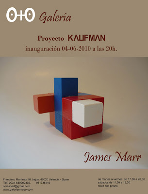
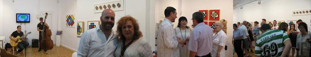
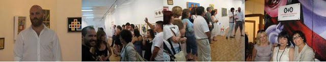

"Proyecto Kaufman":Exposición del 05-06 al 06-07-2010
sábado, 5 de junio de 2010
{kind=link}

JAMES MARR Proyecto "KAUFMAN"Comisariado por Oscar García García
La exposición "KAUFMAN" del artista James Marr nos invita a realizar un viaje al pasado a través de la abstracción y la geometría. Una mirada hacia delante buscando en el pasado. Bajo una serie de obras de apariencia sencilla, realizadas con colores planos y gruesas líneas, se esconden varios símbolos donde vemos reflejados desde teoremas matemáticos y coordenadas hasta juegos de azar y ejercicios de ingenio. La muestra presenta el mundo como un sistema de coordenadas. Un proyecto artístico que describe múltiples objetos-símbolos que se encuentran almacenados en nuestro subconsciente desde niños. Cada uno de estos símbolos, que pueden pertenecer a un simple juego de entretenimiento, son parte de nuestros recuerdos de niñez y juventud.
Signos que son rescatados, diseccionados e insertados en el mundo contemporáneo en busca de una nueva resignificación.La cuadrícula o retícula social en la que vivimos hoy llena de secciones, guías y reglas, es la misma que James Marr utiliza para crear sus composiciones. Debajo de las capas de pintura de sus obras existe un damero donde cada una de sus celdas está dispuesta en un sentido, cuadrícula que en ocasiones es visible y en otras subyace en su interior. Este conjunto de líneas horizontales y verticales crea un ajedrezado que está arraigado en nuestro recuerdo más primario, no sólo como organizador del espacio sino también como una parte importante del ocio y el entretenimiento. Recuerdos de juegos de cuadrículas para niños, cuadernos de caligrafía, papel cuadriculado, sopas de letras, crucigramas, cubo de Rubik, piezas de construcción Lego, puzzles, ajedrez, rompecabezas, videojuegos como el Tetris, etc.
{kind=link}

{kind=link}

Signos que son rescatados, diseccionados e insertados en el mundo contemporáneo en busca de una nueva resignificación.La cuadrícula o retícula social en la que vivimos hoy llena de secciones, guías y reglas, es la misma que James Marr utiliza para crear sus composiciones. Debajo de las capas de pintura de sus obras existe un damero donde cada una de sus celdas está dispuesta en un sentido, cuadrícula que en ocasiones es visible y en otras subyace en su interior. Este conjunto de líneas horizontales y verticales crea un ajedrezado que está arraigado en nuestro recuerdo más primario, no sólo como organizador del espacio sino también como una parte importante del ocio y el entretenimiento. Recuerdos de juegos de cuadrículas para niños, cuadernos de caligrafía, papel cuadriculado, sopas de letras, crucigramas, cubo de Rubik, piezas de construcción Lego, puzzles, ajedrez, rompecabezas, videojuegos como el Tetris, etc.
Será sobre esta cuadrícula invisible donde se cree el símbolo de cada cuadro, siguiendo un procedimiento común que se fundamenta en la línea continua. En los dibujos se combinan líneas de diferentes longitudes y direcciones mediante un mismo patrón: una línea siempre continua, que se desliza sin levantar el pincel del lienzo y sin sobrescribir trazos, desarrollando la misma fórmula de coordenadas. Obras que presentan diferentes combinaciones de figuras geométricas y remiten a esos ejercicios que nos pedían en la escuela: "intente trazar este dibujo sin levantar el lápiz y sin repetir la misma línea".
La exposición, formada por pinturas, esculturas y objetos, se acompaña de varios dibujos preparatorios y explicativos que completan el sentido y significado de la muestra. Una muestra colorista y atrayente reflejo de un mundo matemáticamente organizado lleno de signos, símbolos y señales. Que pretende reflexionar sobre la cultura de símbolos-objetos que se encuentra insertada en nuestra sociedad. Vivimos en una "Era Visual" donde prima la cultura de la imagen y los medios (de información, comunicación, expresión, persuasión…) se han vuelto excesivamente visuales, gracias en gran medida a la tecnología digital. Sin darnos cuenta cada día somos hostigados por multitud de imágenes, que de alguna manera traen consigo evocaciones y reminiscencias de tiempos pasados. Muchos de estos símbolos nos transportan hacia recuerdos de una infancia llena de juegos y vacía de preocupaciones.